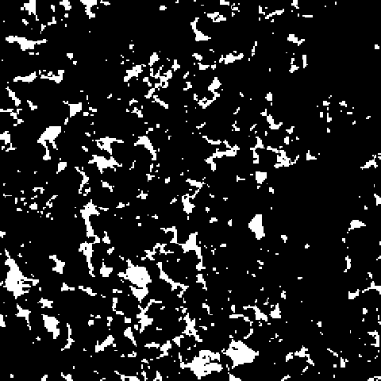

딥러닝으로
슬라이스를 학습
UNet · pix2pix — 보간을 학습 가능한 함수로, mini UNet을 직접 학습합니다


6주 여정 — 이제 딥러닝으로
W1에서 그린 |Δφ| 곡선이 우리가 이겨야 할 베이스라인입니다. 오늘부터 모델이 직접 pore 모양을 학습합니다.
선형 보간은 모양을 모른다
W1의 |Δφ| 곡선은 k가 커질수록 무너졌습니다. 두 슬라이스를 단순히 섞을 뿐, pore가 어떻게 연결되는지는 모르기 때문이죠. 오늘은 pore 기하를 데이터로 학습하는 첫 모델을 만듭니다.
W2가 끝나면 할 수 있는 것
신경망은 어떻게 학습하나
Forward → Loss → Backward → Optimizer — 가중치를 데이터로 다듬는 한 사이클.
학습의 네 박자
"학습" = 모델의 가중치(weight)를 조정해 입력 → 출력 함수를 데이터로부터 만들어 가는 과정.
무엇을 줄이고, 어떻게 한 걸음 옮기나
criterion = nn.L1Loss()
optimizer = Adam(lr=1e-3)
UNet 구조
Encoder로 압축하고, Decoder로 복원하고, Skip으로 잃어버린 detail을 되살린다.
U자 모양 — 압축과 복원
UNet의 핵심 — detail을 건너뛰어 전달
Encoder가 영상을 작게 압축하면서 잃어버린 엣지·텍스처 detail을, 같은 크기의 Decoder 단계에 직접 이어 붙여(concat) 복원합니다.
x = self.up(x)
x = torch.cat([x, skip], dim=1)
시작 → image-to-image의 표준
조건부 image-to-image
"입력 이미지 → 출력 이미지" 변환을 학습하는 프레임워크. Generator는 보통 UNet 기반입니다.
Generator
데이터 &
학습 실행
sparse triplet을 만들고, patch로 가속하고, PRESET으로 학습을 돌립니다.
학습 sample의 단위 — (before, middle, after)
sparse k=3 → 측정 z = 0·3·6·9…, 누락 z = 1·2·4·5… 누락 슬라이스 하나마다 한 sample.
(z=0, z=1, z=3) → in=[bb[0],bb[3]] · tg=bb[1]
(z=0, z=2, z=3) → in=[bb[0],bb[3]] · tg=bb[2]
(z=3, z=4, z=6) → in=[bb[3],bb[6]] · tg=bb[4]
SliceDataset 클래스가 부피 전체에서 이 triplet들을 자동 생성합니다.
(ch0)
(ch1)
(target)
64×64 patch로 16배 빠르게
환경에 맞춰 학습 강도를 고른다
한 줄로 학습, 곡선으로 확인
model, history = train_quick(
bb, k=5, preset='fast', device=DEVICE)
평가 —
Linear vs UNet
같은 sparse k에서 |Δφ|와 SSIM이 얼마나 좋아졌는지, W1 베이스라인과 직접 비교합니다.
선형 보간을 이겼나?
같은 누락 슬라이스를 B1 Linear와 UNet으로 각각 복원해 |Δφ|는 더 작게, SSIM은 더 크게 나오는지 확인합니다.
* 막대는 방향만 — 실제 수치는 노트북에서 본인 결과로 채워 넣으세요.
BB에서 배운 모델, 다른 암석에서도?
BB로 학습한 mini UNet을 그대로(zero-shot) 세 도메인에 평가합니다. 학습 밖에서도 잘 되면 "일반화".


오늘의 과제 & 다음 주
UNet generator에 Discriminator를 더해 더 선명한 복원으로. L1 + SSIM + adversarial loss 균형과 학습 안정화.
질문 & 다음 시간에.
오늘 학습한 mini UNet이 W3 pix2pix GAN의 출발점입니다. 직접 학습한 체크포인트를 꼭 보존하세요.